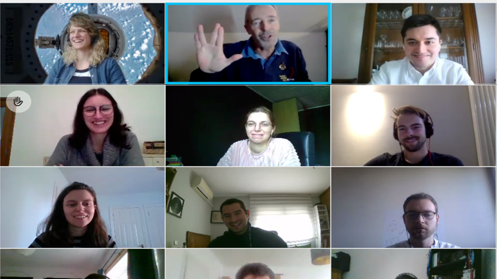

TALES OF AN ASTRONAUT
Will you be applying?
March 31, 2021Bonjour à tous!
You may have heard that ESA is recruiting astronauts for the first time since 2009, starting today! With that in mind, we thought we’d share our stories from interacting with a former astronaut at our recent training week. As a team, we are super lucky to have actually met (online) not one, but TWO former astronauts. This post recounts some of the experiences shared with us by the second of those, Jean-François Clervoy.
We hope you enjoy!
---
Our talk from Jean-François Clervoy was certainly a highlight of the week for many. We are lucky that as a team, this is our second time “meeting” an astronaut and the stories are incredible.
Mr Clervoy has spent 33 years of his life as an active astronaut, serving in three Shuttle missions, as well as doing a few other things, such as founding Novespace (the company providing the microgravity flight for the Fly Your Thesis! teams). He inspired us with his stories of releasing the Hubble telescope, videos of his heroes driving around on the Moon and attempts at racing Usain Bolt under reduced gravity!
In recounting his time in space, he had a few anecdotes which will remind people that astronauts too are humans. For example, one early photo showed an impressive movie collection (all on VHS tapes of course) for the astronauts on the Shuttle to e njoy in their free time. In another story he showed a photo of the personal items he had brought with him to space, including a rubix cube - which actually inspired director of Gravity Alfonso Cuarón to include a rubix cube in his movie! Another relatable fact was that in the early days of human spaceflight, roughly 20% of objects on board were lost, due to poorly organised storage. So, next time you can’t find your keys, be happy knowing that at least they will have gone “down” in some way.
Clervoy also spoke a little about what it means to be an astronaut. While it is a common misconception that astronauts do lots of research, he prefers to describe them as “operators” of the scientific equipment, while the data is analysed by the experts on the ground. Astronauts may also be inventors, one example of this being himself - check out his watch. Furthermore, astronauts need to be great team players, problem solvers and have to be able to adapt. He says you are never too old to learn a new way of doing things!
Two key messages that highlighted some interesting perspectives, which resonated with me as a simple Earth-being, were as follows. One is that no individual has ever been forced to go into space - so no astronaut has been told to do that specific job (until they got the job, of course). Thus it is common for them to be truly engaged in their work, and this certainly applies to many areas of day to day life on Earth. The other was a simple quote: “Earth is not fragile; we are”.
I could go on for a lot longer about his thoughts on the future of spaceflight, including tourism and interplanetary travel, and even space mining and elevators. But, as hinted to in the picture above, his closing messages were taken from a popular movie, with a slight twist for the current circumstances (I told you, astronauts are good at adapting things!): “Live long, safe, and prosper”.
[Main image source: ESA (accessed 30/3/21)]